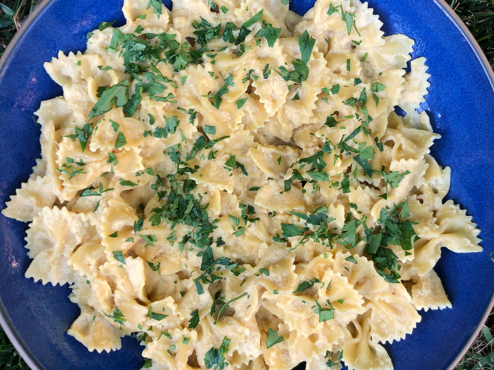

Vegan Alfredo

Description:
One of the most delectable and simple recipes to make is a classic Alfredo
sauce. I wanted to make a version of this beloved dish for my dairy-free
daughter and my borderline vegan son, but with ingredients they can enjoy.
You’ll never miss the cream, butter and cheese in my vegan Alfredo. My
secret ingredient is nutritional yeast, which has a naturally cheesy
flavor.
Ingredients:
- 1 pound of vegan pasta, any pasta shape you prefer
- Kosher salt
- 2 tablespoons olive oil
- 1 yellow onion, sliced
- 4 cloves garlic, chopped
- 1/2 cup raw cashews
- 1 cup vegetable broth
- 3 tablespoons nutritional yeast
- 1 tablespoon white miso
- Chopped fresh parsley, for sprinkling (optional)
Steps:
-
Bring a large pot of salted water to a boil and cook the pasta according
to the package directions. Drain the pasta, reserving 1/3 cup of the
cooking water.
-
While the pasta cooks, heat a large saute pan over medium heat. Add the
oil and onions and cook, stirring, until translucent, about 4 minutes.
Add the cashews and garlic and cook, stirring, until they're just
starting to color, about 4 minutes. Add the vegetable broth and bring
just to a boil.
-
Transfer the mixture to a blender and add the nutritional yeast, miso
and 1 teaspoon salt. Alternatively, keep the mixture in the saute pan;
add the nutritional yeast, miso and 1 teaspoon salt and use an immersion
blender. Blend until the sauce is thick, creamy and smooth.
-
Return the drained pasta to the pot and toss with the sauce. If the
sauce is too thick, toss with the reserved cooking water to thin the
sauce.
- Sprinkle with chopped parsley, if desired
© Copyright 2019 Television Food Network, G.P. All rights reserved.